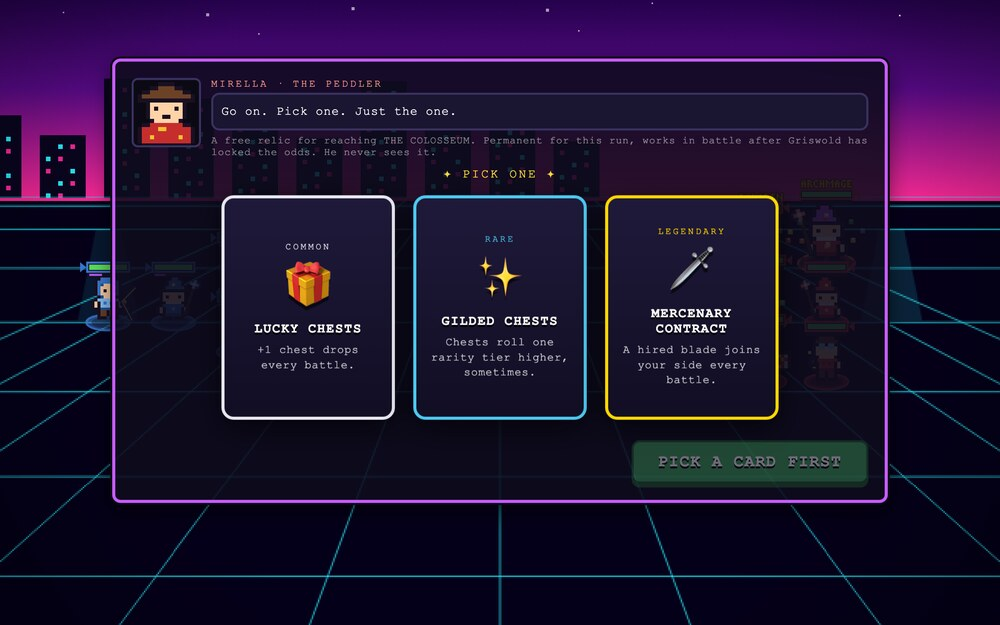

What it is
A pixel-art auto-battler in which you never touch the fight. You build a warband, a goblin bookie named Griswold prices it, you bet on your own outcome, roll the dice, and then watch it burn — with a few dirty tricks left in your bag.
The oddsmaker only sees the armies at arrival. Everything you buy after the lock is invisible to him. That gap is your edge.
The loop
- Prep. A fresh enemy warband is generated. Griswold “considers” your fielded army — he simulates the fight about forty times — and locks the odds. Only then do you shop: skills, recruits, consumables, evolutions.
- Bet. I WIN or I LOSE, pick a chip, fight. Backing yourself always pays at least the league's win floor. Betting against yourself gives that up — and gets you a rack of sabotage items to make sure of it.
- Dice. One to three of them, by league. Roll low and the enemy is buffed; roll the middle and chaos lands on everyone; roll high and it is yours. They resolve before the bell, on the standing formation, so a lightning storm can kill one of your units before the fight has started.
- Battle. Fully automatic. Chests fall from the sky mid-fight; crack them and drag what is inside onto the field. Sudden death at thirty-five seconds.
- Result. The payout flies into the gold pile as coins, and a fresh warband is waiting.
Where the edge lives
Griswold remembers. Bench a unit and he is recalled to re-price the army — and this time he sees every upgrade you have bought since. Same army, same number; changed army, full re-valuation. Recalling him is how you lose the edge you were building.
Your bag, the dice, the chests and the relics are never priced in at all. Neither is a warband you have deliberately starved: skimp or bench, and the odds make you a long-shot on a fight you may still be able to steal with what is in your pocket.

What is in it
- Six leagues, Wood to Mythic, each with its own entry fee, roster cap, dice count, house edge and win floor. Promotion is bought with correct bets, not victories.
- Seven classes — Knight, Archer, Mage, Healer, Assassin, Bomber, Guardian — each with an ultimate and an evolution that changes a rule rather than a number: a Paladin heals allies when it hits, a Sniper pierces, a Colossus stuns the ground.
- Eighteen procedural backdrops, three per league, one picked when you arrive.
- Skills, relics and consumables in four rarities, up to a Golden God — plus sabotage items with names like Bench Warrant, Tainted Water and White Flag for the rounds you have bet against yourself.
- No income but the bets. You start on $300. Drop below $50 and you are forced all-in; lose that and the run is over. The house will front you a $25 marker so you are never stuck, which is exactly as generous as it sounds.
How the odds are made
They are Monte Carlo, not a formula. Griswold clones your fielded units and runs the real battle headlessly forty times, spread across frames so the round never hitches. The enemy is tuned the same way — a flat handicap bisected against a deterministic phantom army representing what an average investor would have fielded at this league and round.
Variance is deliberate. Damage dealt and taken wobble by a fifth, ult charge starts randomly, formations jitter. Without it the outcomes came out near-deterministic and the odds collapsed to 4% and 96%, which is no kind of bet at all.
Where it stands
Playable end to end through all six leagues. The economy is honest about itself: the league fees, the win floors and the power curve are first guesses waiting on real play, and the post-lock edge may well turn out to be too strong.
One HTML file, no build and no dependencies — vanilla Canvas 2D, WebAudio synthesised at runtime, HTML overlays for the panels. Sprites are string pixel maps palette-swapped per team, and a 3×5 pixel bitmap font draws every damage number on screen. Under 900px wide the prep panels become a tabbed bottom sheet.